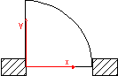
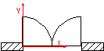
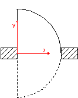
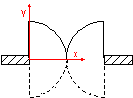
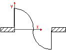
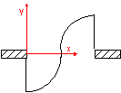
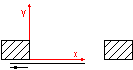
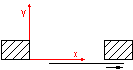
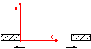
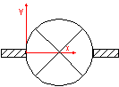

Definition from IAI: This enumeration defines the basic ways to describe how doors operate.
HISTORY New Enumeration in IFC Release 2.x .
Illustration
| Enumerator | Description | Figure |
| SingleSwingLeft | Door with one panel that opens (swings) to the left.
The hinges are on the left side as viewed in the direction of the positive
y-axis. Note: Direction of swing (whether in or out) is determined at the IfcDoor. |
 |
| SingleSwingRight | Door with one panel that opens (swings) to the right.
The hinges are on the right side as viewed in the direction of the positive
y-axis. Note: Direction of swing (whether in or out) is determined at the IfcDoor. |
 |
| DoubleDoorSingleSwing | Door with two panels, one opens (swings) to the left
the other opens (swings) to the right. Note: Direction of swing (whether in or out) is determined at the IfcDoor. |
 |
| DoubleSwingLeft | Door with one panel that swings in both directions and
to the left in the main trafic direction. Also called double acting
door. Note: Direction of main swing (whether in or out) is determined at the IfcDoor. |
 |
| DoubleSwingRight | Door with one panel that swings in both directions and
to the right in the main trafic direction. Also called double acting
door. Note: Direction of main swing (whether in or out) is determined at the IfcDoor. |
 |
| DoubleDoorDoubleSwing | Door with two panels, one swings in both directions and
to the right in the main trafic direction the other swings also in both
directions and to the left in the main trafic direction. Note: Direction of main swing (whether in or out) is determined at the IfcDoor. |
 |
| DoubleDoorSingleSwingOppositeLeft | Door with two panels that both open to the left, one panel swings in one direction and the other panel swings in the opposite direction. |  |
| DoubleDoorSingleSwingOppositeRight | Door with two panels that both open to the right, one panel swings in one direction and the other panel swings in the opposite direction. |  |
| SlidingToLeft | Door with one panel that is sliding to the left. |  |
| SlidingToRight | Door with one panel that is sliding to the right. |  |
| DoubleDoorSliding | Door with two panels, one is sliding to the left the other is sliding to the right. |  |
| FoldingToLeft | Door with one panel that is folding to the left. |  |
| FoldingToRight | Door with one panel that is folding to the right. |  |
| DoubleDoorFolding | Door with two panels, one is folding to the left the other is folding to the right. |  |
| Revolving | An entrance door consisting of four leaves set in a form of a cross and revolving around a central vertical axis (the four panels are described by a single IfcDoor panel property). |  |
| RollingUp | Door that opens by rolling up. |  |
| UserDefined | user defined operation type | |
| NotDefined |
NOTE
- Figures are shown in the ground view.
- Figures (symbolic representation) depend on the national building code.
- These figures are only shown as illustrations, the actual representation in the ground view might differ.
- Open to the outside is declared as open into the direction of the positive y-axis.
- The location of the lining is defined by the local placement.